Prise en main
Ce qui se clique, se glisse et se tourne sur chaque instrument, et les aides qui montrent ce que la salle ne montre pas.
Commun aux trois instruments
L'écran
À gauche, l'appareil vu de dessus, ou le banc ; à droite, ce qu'on observe : l'écran, l'œil, le champ de la lunette. Les deux se répondent en continu : un geste sur l'appareil change l'image aussitôt, en aperçu, puis l'image s'affine quand on s'arrête.

- Bandeau : les aides en bascules (une lettre chacune), Œil simulé, Cahier, « ? » et plein écran.
- Ligne des gestes : ce que font clic, glisser, molette et touches sur ce que survole la souris. Elle change à chaque organe survolé.
- Appareil : les organes se manipulent directement (vis, molettes, pièces, lunette).
- Étagère : le matériel à poser, rangé en onglets ; ▾ la replie pour dégager l'appareil.
- Observation : l'image, avec ses propres gestes.
- Étapes et Un indice, en bas (Michelson et goniomètre).
Œil simulé : avec / sans choisit la luminosité de l'image : avec (ce que verrait l'œil dans la salle, parfois faible) ou sans (exposition ajustée pour qu'on voie toujours quelque chose).
Gestes
Une seule grammaire pour les trois instruments ; la ligne des gestes la précise pour chaque organe.
| Geste | Effet |
|---|---|
| clic | choisir un élément ; sur le fond, plus rien de choisi |
| glisser | déplacer ce qu'on prend, faire rouler une vis |
| molette | régler cran par cran (une vis, la lunette, un réglage) ; sur un élément des bancs du Michelson ou une pièce du banc d'optique : le déplacer le long de son banc |
| Maj, Ctrl+Maj, Ctrl | avec la molette ou le glisser : fin, ultrafin, gros |
| pastille d'un élément | molette ou glisser vertical : son réglage principal (diamètre d'un iris, position d'une lentille…) |
| clic droit | le menu de l'élément : remplacer, taper une position, retirer… |
| double-clic | recentrer ou tout revoir |
| Échap | fermer un menu ou un panneau, puis plus rien de choisi |
| Ctrl+Z, Ctrl+Maj+Z | annuler, rétablir |
| ? | tous les gestes et raccourcis de l'instrument, rangés par zone |
Une souris à molette est préférable. Sur un pavé tactile, le défilement à deux doigts tient lieu de molette.
Étapes et indices
Au Michelson et au goniomètre, l'appareil part déréglé. Les étapes du réglage s'affichent en bas et se cochent d'elles-mêmes quand l'image obtenue le montre : rien n'est déclaré à la main. Un indice donne ce qu'il faut regarder, et pourquoi ; un second clic désigne l'organe et le sens du geste. Jamais de valeur. Un clic sur une étape fait viser les indices sur elle.
Nouveau dérèglement (deux clics pour confirmer) donne un autre appareil à régler. Le banc d'optique, lui, n'a pas d'étapes : on y monte ce qu'on veut.
Mémoire et cahier
Chaque instrument garde son état dans le navigateur : on retrouve l'appareil comme on l'a laissé, sur le même ordinateur et le même navigateur. Rien n'est envoyé ailleurs.
Cahier : les mesures notées au fil de la séance, exportables en CSV. Il n'est jamais touché par Ctrl+Z ni par un nouveau dérèglement.
Interféromètre de Michelson
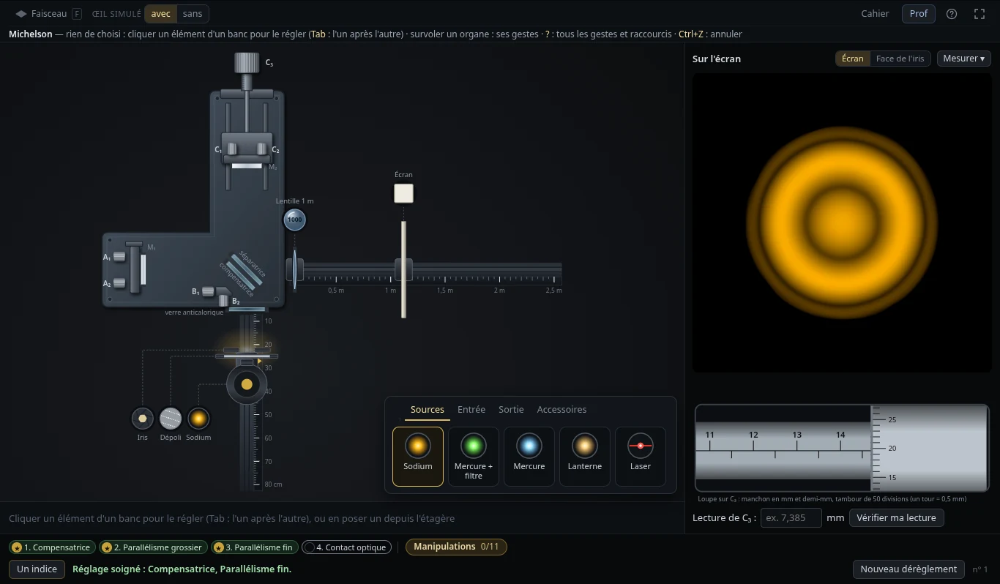
- Vis C₁, C₂ (grossières) et A₁, A₂ (fines) des miroirs, B₁, B₂ de la compensatrice, C₃ du chariot.
- Banc d'entrée : lampe, dépoli, iris, condenseur, lentille.
- Banc de sortie : lentilles, écran ou œil.
- Pastilles des éléments.
- Étagère : Sources, Entrée, Sortie, Accessoires.
- Image et ses vues.
- Loupe de C₃ et lecture.
- Réglages, puis le bouton Manipulations.
Appareil et bancs
Vis. Glisser une vis la fait rouler ; la molette la tourne de 1/40 de tour par cran. C₁ et C₂ dégrossissent, A₁ et A₂ affinent ; C₃ avance d'une division (10 µm) par cran.
Éléments des bancs. Un clic choisit l'élément : un cavalier doré le marque et son bandeau s'ouvre sous les bancs (◂ ▸ pour le déplacer, clic sur la position pour la taper, changer de lampe ou de détecteur, Retirer). On le glisse le long de son banc ; la molette le déplace aussi ; lâché hors du banc, il reste au bout du banc. Pour le retirer : Retirer, ou Suppr.
Pastilles. À côté de chaque élément, une pastille montre son état et porte son réglage principal : diamètre de l'iris, tirage du condenseur de la lanterne, position d'une lentille ou de l'écran, accommodation de l'œil.
Compensatrice. Un clic la choisit ; au bandeau, « Régler la compensatrice » la met parallèle à la séparatrice et saute la première étape.
Clic droit sur M₁ ou M₂ : poser ou retirer la feuille, la lamelle. Sur un élément : Remplacer par, Position…, Retirer ; sur un banc vide : Poser ici.
Aides
| Aide | Sur l'appareil | Sur l'image |
|---|---|---|
| Faisceau (F) | la lumière tracée à travers l'appareil, à l'échelle des bancs : toute la lumière utile et le pinceau issu du centre de la source | — |
| Feuille (étagère, ou clic droit sur un miroir) | une feuille posée sur M₁ ou M₂, qui cache ce miroir | vue « Feuille » : les taches de lumière qu'elle reçoit |
| Face de l'iris | — | vue « iris » : la lumière qui arrive sur l'iris |
| Loupe de C₃ | — | manchon et tambour du chariot ; taper la lecture puis « Vérifier ma lecture » : seul l'écart est donné |
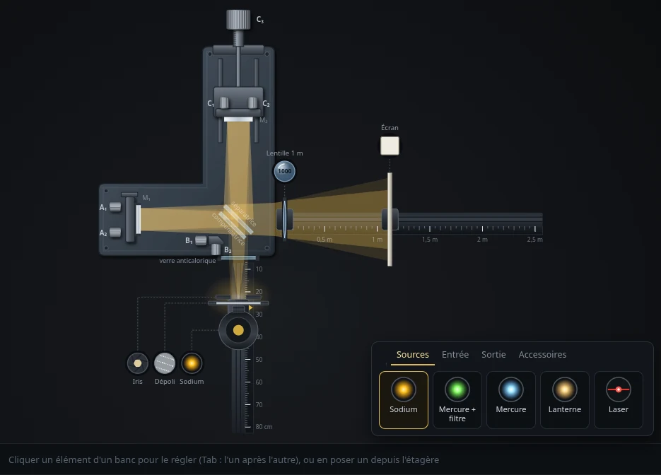
Image et mesures
Les vues, en pastilles au-dessus de l'image : le détecteur (écran ou œil), la face de l'iris, la feuille. À l'œil, glisser déplace l'œil, la molette accommode en mode « À la main » (vers le haut : plus loin), le double-clic recentre.
Mesurer ▾ pose un capteur sur l'écran : barrette, photodiode ou fibre du spectromètre. On glisse le capteur pour le déplacer ; la molette sur la barrette la tourne. Sur le graphe du capteur, la molette resserre ou élargit la fenêtre. Le × de la fenêtre Capteur le retire de l'écran. « Capteur réel » donne la barrette et le spectromètre du commerce ; le capteur parfait est plus long (15 cm contre 2,9 cm) et sépare le doublet du sodium, que le réel ne résout pas.
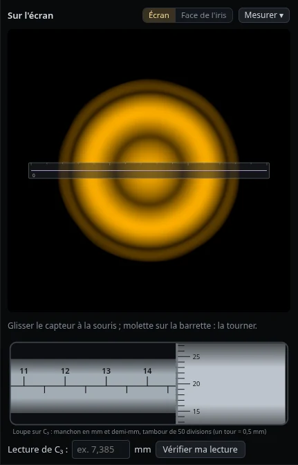
Réglages et manipulations
En bas, les quatre réglages : compensatrice, parallélisme grossier, parallélisme fin, contact optique. Chacun se coche d'après l'état de l'appareil, quel que soit le montage ; une étoile marque un réglage soigné. La bulle d'une puce dit ce qu'on y regarde.
Un indice juge ce que produit le montage, pas la façon de l'avoir monté. Si l'image ne permet pas de juger le réglage visé (trop sombre, champ minuscule, pas de figure, images de la source floues ou trop grandes), il propose le geste de montage qui l'améliore : ouvrir ou fermer l'iris, regarder ailleurs, approcher la lampe, changer de source… Sinon, il passe au geste sur l'appareil. Quand le même symptôme revient après deux indices, il décrit un montage qui marche.
Manipulations (au bout de la rangée) : ce que montre un Michelson réglé, un phénomène à la fois, avec ce qu'on observe et comment faire ; la case se coche quand on l'a vu. Une manipulation ouverte, « Un indice » aide sur elle.
Spectrogoniomètre
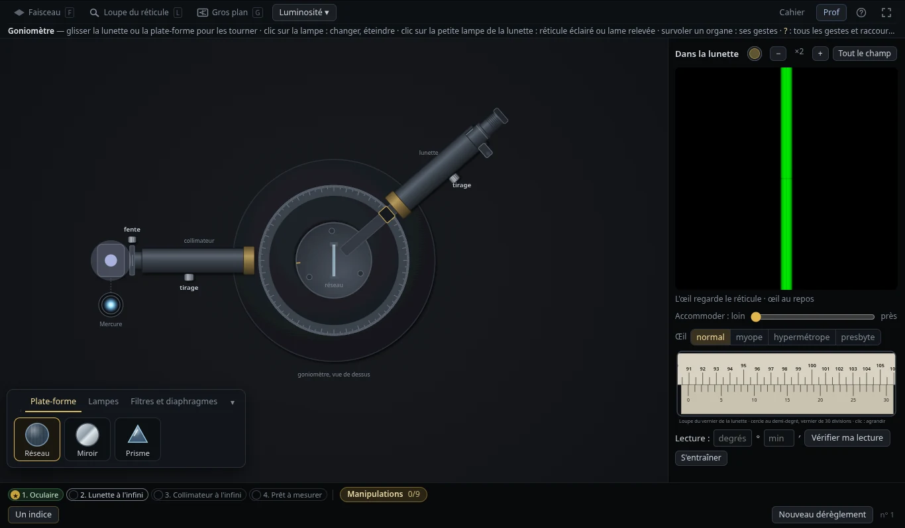
- Lampe et sa pastille.
- Collimateur : fente et tirage.
- Plate-forme : réseau, miroir ou prisme.
- Lunette : oculaire, tirage, petite lampe du réticule.
- Champ de la lunette, zoom et accommodation.
- Vernier et lecture.
- Étapes et Manipulations.
Appareil
Lunette et plate-forme se tournent en les glissant (Maj : dix fois plus lent) ; la molette dessus les tourne finement. Les molettes de tirage et de fente roulent au glisser ou à la molette ; l'oculaire se glisse le long de la lunette.
Clic sur la lampe (ou sa pastille) : le menu des lampes, Éteindre / Allumer. Clic sur la petite lampe de la lunette : réticule éclairé, ou lampe éteinte et lame relevée.
Étagère : Plate-forme, Lampes, Filtres et diaphragmes. Une carte se pose d'un clic (elle remplace la précédente) ou en la glissant sur la plate-forme, la lampe ou le collimateur.
Aides
| Aide | Ce qu'elle montre |
|---|---|
| Faisceau (F) | la lumière de la fente à l'œil, sur l'appareil |
| Loupe du réticule (L) | où se forme l'image dans la lunette, par rapport au réticule et au plan que l'œil voit net |
| Gros plan (G) | la plate-forme de près, rayons du collimateur à l'échelle ; ses pastilles ne tracent qu'une couleur |
Loupe du réticule et Gros plan s'ouvrent dans des panneaux qu'on déplace par leur titre.
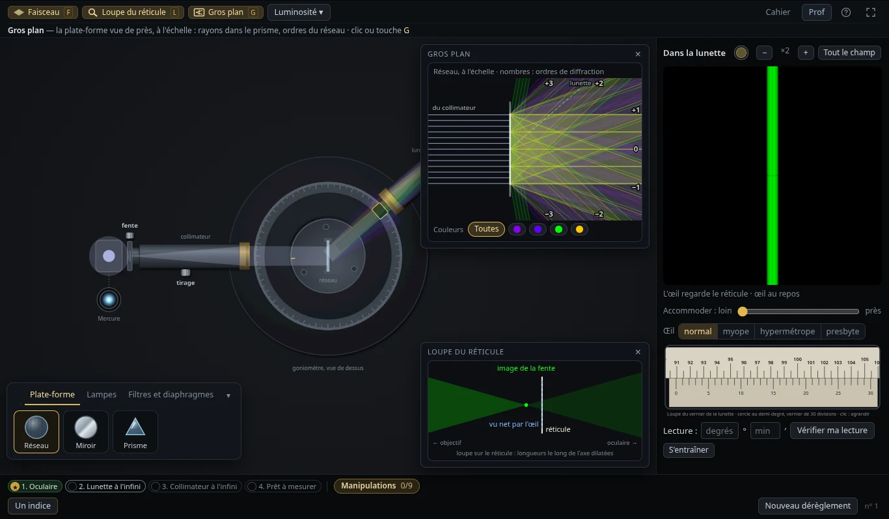
Champ et vernier
La molette sur le champ agrandit ×1, ×2, ×4 autour du pointeur ; − + et « Tout le champ » font de même. Agrandi, on glisse pour se déplacer ; Maj+glisser ou les flèches déplacent l'œil. Un clic sur un objet du champ le fait regarder par l'œil ; double-clic : tout le champ.
Sous le champ, Accommoder force la mise au point de l'œil, et l'on choisit l'œil (normal, myope, hypermétrope, presbyte).
Le vernier se lit à la loupe (clic : en grand). On tape degrés et minutes, puis « Vérifier ma lecture » : seul l'écart est donné. « S'entraîner » propose une autre position à lire.
Manipulations (en bas) : ce que montre un goniomètre réglé, un phénomène à la fois, avec ce qu'on observe et comment faire ; la case se coche quand on l'a vu. Une manipulation ouverte, « Un indice » aide sur elle.
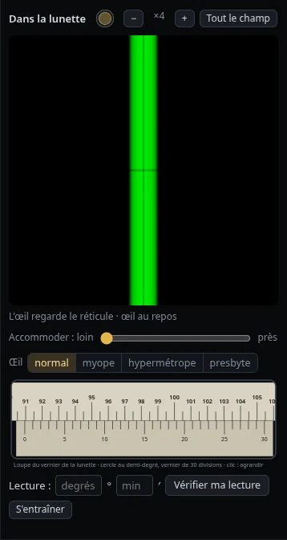
Banc d'optique
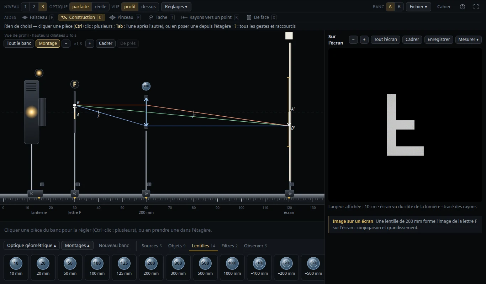
- Montages (montages types par thème) et Nouveau banc.
- Niveau, Optique, Vue.
- Bancs A et B.
- Aides.
- Banc et ses boutons de zoom.
- Bandeau de la pièce choisie.
- Étagère.
- Image : récepteurs, zoom, Cadrer, Mesurer ▾.
Montages, niveaux, optique
Montages, sous le banc, pose un montage type, qui remplace le banc affiché. Nouveau banc (deux clics) repart du montage de départ.
| Niveau | Ce qu'il ouvre |
|---|---|
| 1 | l'essentiel : optique parfaite, image avec l'œil simulé par défaut, ni capteur ni mesures |
| 2 | optique réelle au choix, luminosité réelle, capteur photo, densités, barrette, photodiode, spectromètre |
| 3 | tout le niveau 2, plus les pièces décentrables et les lentilles inclinables |
Redescendre de niveau ne perd rien : un décentrement posé au niveau 3 est ignoré plus bas et revient au niveau 3.
Optique : parfaite (lentilles minces idéales, sans aberration, dispersion ni diffraction) ou réelle (vraies lentilles en verre, diffraction par les montures). Vue : le banc de profil ou de dessus. A | B : deux bancs pour comparer deux réglages ; B part d'une copie de A.
Poser et régler les pièces
Poser : glisser une carte de l'étagère sur le banc ; lâchée sur une pièce, elle la remplace au même endroit. Un clic sur une carte la pose à une place libre.
Choisir : clic sur une pièce ; Ctrl+clic en ajoute une à la sélection ; Maj+clic prend toutes celles d'entre deux. Tab passe à la pièce voisine, utile quand des pièces sont collées.
Déplacer : glisser (toute la sélection, écarts gardés), molette, ou clic sur la position au bandeau pour la taper. Sous le banc : la pièce est rangée.
Régler : molette ou glisser vertical sur la miniature d'une pièce (largeur d'une fente, ouverture d'un iris, angle d'un polariseur…), ou ↑ ↓.
Clic droit sur une pièce : Remplacer par, Position…, Escamoter (relevée hors du faisceau, à sa place), Verrouiller, De près, Ranger. Double-clic : De près, la pièce seule à l'échelle vraie, avec sa vue de face.
Zoom du banc : boutons en haut à gauche (tout le banc, le montage, −, +, Cadrer) ; Cadrer puis un rectangle cadre une zone.
Aides
Seules les aides qui ont un sens pour le montage posé apparaissent.
| Aide | Ce qu'elle montre | Ce qui se clique |
|---|---|---|
| Faisceau (F) | toute la lumière, de la source au détecteur | — |
| Construction (C) | les trois rayons particuliers issus du haut de l'objet, lentille après lentille ; en optique parfaite | — |
| Pinceau (P) | des rayons exacts issus d'un point de l'objet ; ceux qu'une monture arrête sont grisés | sur le banc : clic sur l'objet, ou glisser la poignée, pour le point de départ |
| Tache (T) | où tombent, sur l'écran ou la rétine, les rayons du pinceau : une couleur par longueur d'onde | — |
| Rayons vers un point (R) | des rayons de la lumière qui arrive en un point de l'image, suivis depuis la source | sur l'image : clic sur le point |
| Polarisation (O) | entre les pièces, la vibration de la lumière : naturelle, rectiligne, elliptique, circulaire ; avec un polariseur ou une lame posés | — |
| De face (X) | la pièce choisie vue depuis la source, et où tombe la lumière | au niveau 3 : glisser la pièce dans son plan pour la décentrer |
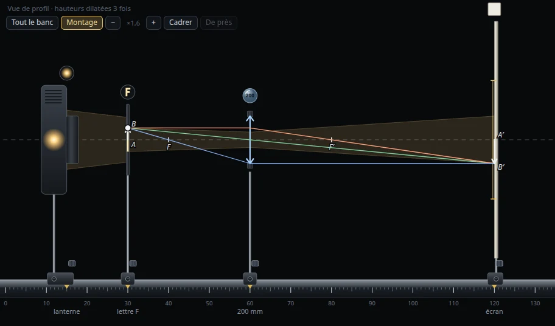
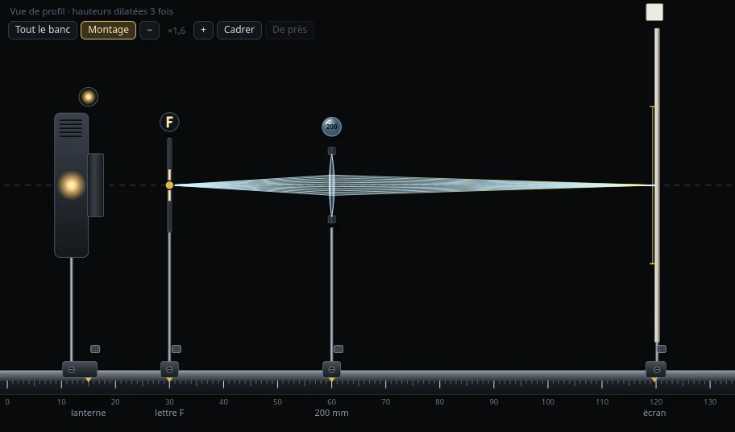
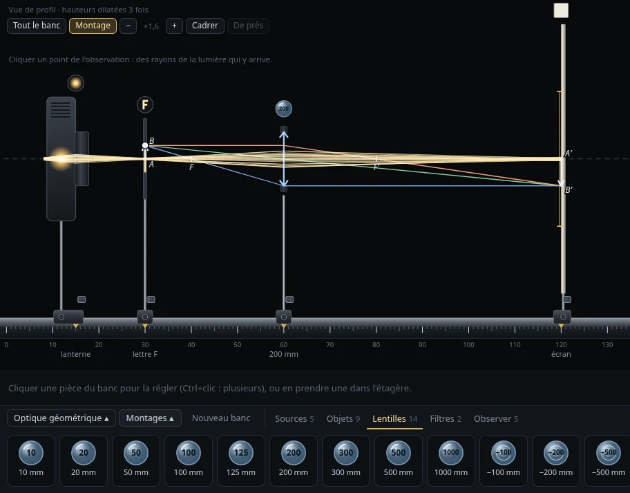
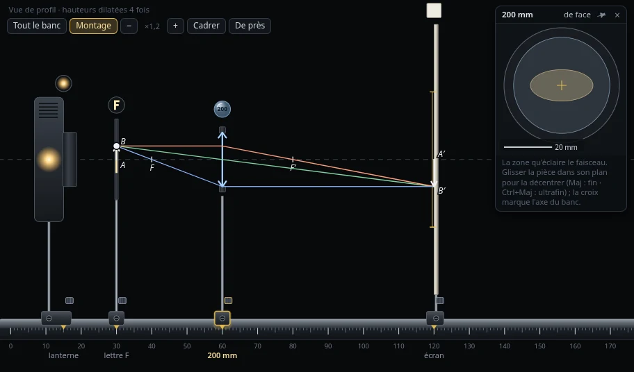
Image et mesures
Glisser se déplace dans l'image ; la molette zoome autour du pointeur ; double-clic : tout voir. Maj+glisser déplace l'œil posé (fin), Ctrl+glisser plus vite.
Quand plusieurs récepteurs sont posés, des pastilles au-dessus de l'image choisissent celui qui observe ; ceux qui sont devant lui sont relevés d'office.
Mesurer ▾ (niveaux 2 et 3, sur l'écran) : barrette, photodiode, spectromètre. Un clic sur l'image pose la photodiode ou la fibre ; la barrette se glisse et se tourne par la poignée ronde à son bout. Le petit graphe s'ouvre en grand, avec export CSV.
Configurations types
Le bouton Prof ouvre un panneau qui dévoile les valeurs cachées du dérèglement (Michelson, goniomètre) et pose des configurations types : un appareil réglé, des anneaux, la lumière blanche… Pratique pour aller droit à une observation sans refaire tout le réglage.
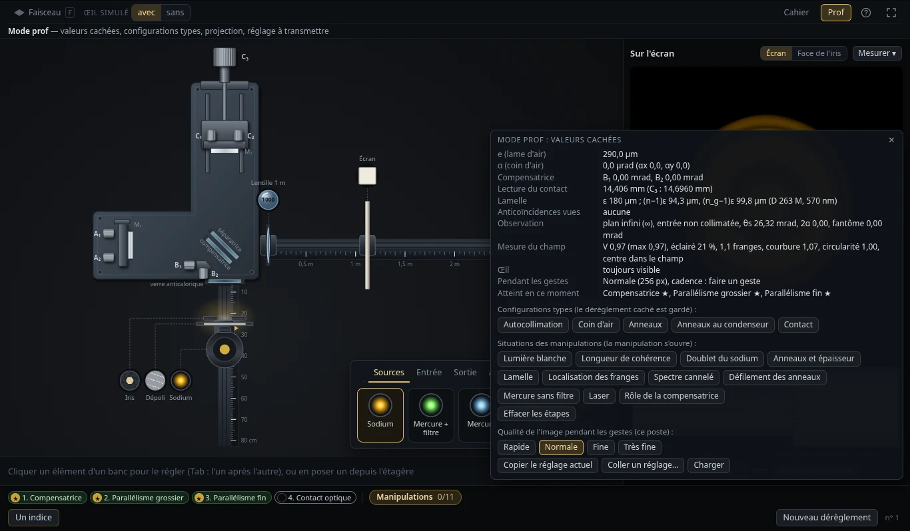
Raccourcis clavier
Hors d'un champ de saisie. Le panneau « ? » de chaque instrument les rappelle tous.
| Touche | Michelson | Goniomètre | Banc |
|---|---|---|---|
| ? | tous les gestes et raccourcis | ||
| Échap | fermer un panneau ou un menu, puis plus rien de choisi | ||
| Ctrl+Z, Ctrl+Maj+Z | annuler, rétablir | ||
| F | Faisceau | ||
| flèches | élément choisi : le long de son banc, ou son réglage ; sinon l'œil | l'œil dans le champ | ← → : déplacer la sélection ; ↑ ↓ : son réglage |
| Tab, Maj+Tab | élément suivant, précédent | — | pièce voisine |
| Suppr | retirer l'élément choisi | — | ranger la sélection |
| + − 0 | — | zoom du champ, tout le champ | zoom du banc, tout le banc |
| autres lettres | — | L loupe du réticule, G gros plan | C, P, T, R, O, X : les aides ; E escamoter, L verrouiller, V vue, A, B bancs |